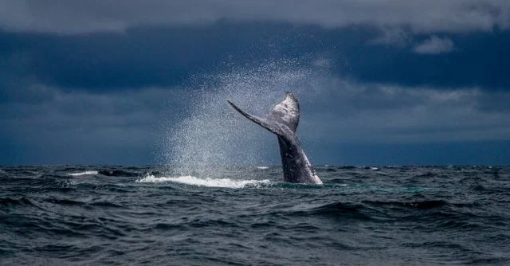

David Attenborough'nun anlatımıyla film, mercan resiflerinden derin denizlere uzanan okyanus yaşamını ve dip trolü gibi baskıların etkisini gösteriyor. Korunan deniz alanlarının ekosistemleri ne kadar hızlı iyileştirebildiğine de dikkat çekiyor.